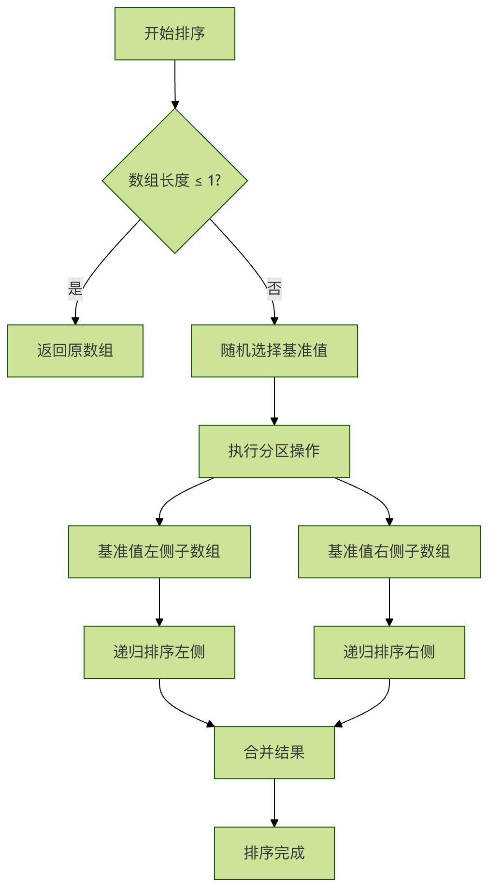
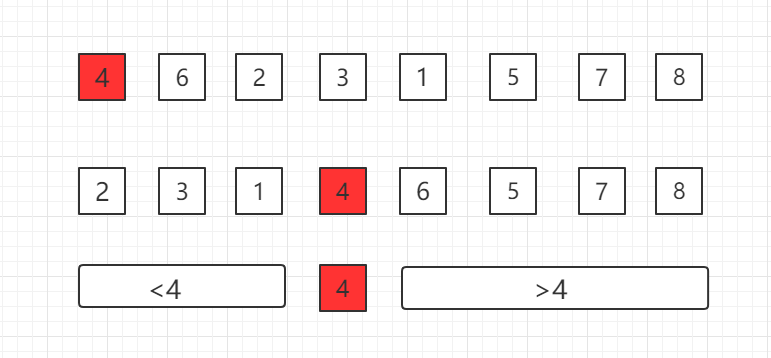
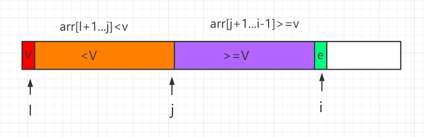

ランダム化クイックソート
クイックソートはコンピュータサイエンスにおいて最も古典的なソートアルゴリズムの1つであり、平均時間計算量が O(n log n) であることで知られています。しかし、入力データがソート済みまたはほぼソート済みの場合、従来のクイックソートは O(n²) の時間計算量に劣化します。ランダム化クイックソートは、ランダム性を導入することでこの問題を巧みに解決します。
ランダム化クイックソートを詳しく見る前に、まず従来のクイックソートの核となる考え方を振り返りましょう。
クイックソートの仕組み
クイックソートは分割統治法を採用しており、その基本的な手順は次のとおりです。
- ピボットの選択：配列から1つの要素をピボットとして選択します
- パーティション操作：配列を並べ替え、ピボットより小さいすべての要素をピボットの前に、ピボットより大きいすべての要素をピボットの後に配置します
- 再帰的ソート：ピボットの左右にある部分配列に対して同じプロセスを再帰的に適用します
従来のクイックソートの問題
従来のクイックソートの性能は、ピボットの選択に大きく依存します。選択するピボットが毎回配列をほぼ2等分できる場合、アルゴリズムの効率は最大になります。しかし、次のような状況では性能が著しく低下します：
- ソート済み配列：配列がすでにソートされている場合、毎回最後の要素をピボットとして選ぶと、パーティションが極端に不均衡になります
- 逆順配列：ソート済みの配列と似ていますが、方向が逆です
- 重複要素：大量の重複要素もパーティションの不均衡を引き起こします
これらの最悪ケースでは、クイックソートの時間計算量は O(n²) に劣化し、バブルソートなどの単純なアルゴリズムと同等になります。
ランダム化クイックソートはランダム性を導入することで最悪ケースの発生を回避し、さまざまな入力に対してアルゴリズムが良好な平均性能を維持できるようにします。
ランダム化クイックソートの核心となる改良は非常にシンプルです：ピボットをランダムに選択する最初、最後、中央の要素を固定的に選ぶのではなく、ランダムに選択します。このランダム性により、アルゴリズムが最悪ケースに陥る確率は極めて低くなり、期待時間計算量 O(n log n) が保証されます。
ランダム化クイックソートの基本思想：1回のソートで、ソート対象のデータを独立した2つの部分に分割します。一方の部分のすべてのデータは、もう一方の部分のすべてのデータよりも小さくなります。その後、この方法で2つの部分のデータをそれぞれクイックソートします。ソートプロセス全体は再帰的に実行でき、これによりデータ全体が順序付けられた列になります。

アルゴリズムの利点
| 特性 | 従来のクイックソート | ランダム化クイックソート |
|---|---|---|
| 最悪時間計算量 | O(n²) | O(n²)（ただし確率は極めて低い） |
| 平均時間計算量 | O(n log n) | O(n log n) |
| 最悪ケースの発生条件 | 特定の入力（ソート済み配列など） | ランダム選択がたまたま常に最大値または最小値を選んでしまうこと |
| 空間計算量 | O(log n)（再帰スタック） | O(log n)（再帰スタック） |
| 安定性 | 不安定 | 不安定 |
理論上、ランダム化クイックソートの最悪時間計算量は依然として O(n²) ですが、実際の応用ではこの最悪ケースが発生する確率は極めて低くなります。n 個の要素を含む配列の場合、ピボットをランダムに選択して最悪ケースとなる確率は約 1/n! であり、実際にはほとんど発生しません。
プロセスの図解
配列内で1つのピボットを選択します。たとえば最初の位置にある 4 を選択し、その 4 を正しい位置に移動させます。これにより、ピボットより前の部分配列のデータは 4 より小さく、ピボットより後の部分配列のデータは 4 より大きくなります。その後、再帰的に進めて全体のソートを完了します。

選択したピボットデータを正しい位置に移動させる方法がクイックソートの核心であり、これを Partition と呼びます。
プロセスは次のとおりです。ここでiは、現在走査して比較している要素の位置です。

この partition プロセスをコードで表すと、次のようになります：
例
private static int partition(Comparable[] arr, int l, int r){
Comparable v = arr[l];
int j = l;
for( int i = l + 1 ; i <= r ; i ++ )
if( arr[i].compareTo(v) < 0 ){
j ++;
// 配列要素の位置を交換する
swap(arr, j, i);
}
swap(arr, l, j);
return j;
}
...
ほぼソート済みの配列に対してクイックソートを行う場合、毎回の partition 後の部分配列のサイズが極端に不均衡になり、簡単に退化してしまい、O(n^2)O(n²) の時間計算量アルゴリズムになります。上記のコードを最適化する必要があります。ランダムに基点を選択して比較する方式を、ランダム化クイックソートアルゴリズムと呼びます。上記のコードの前に次の1行を追加するだけで、配列内の1つのデータをランダムに選択し、基点データと交換します。
swap( arr, l , (int)(Math.random()*(r-l+1))+l );
Java サンプルコード
ソースコードパッケージのダウンロード：Download
QuickSort.java ファイルコード：
/**
* ランダム化クイックソート
*/
public class QuickSort {
// arr[l...r] 部分に対して partition 操作を行う
// p を返す。arr[l...p-1] < arr[p] ; arr[p+1...r] > arr[p] となるようにする
private static int partition(Comparable[] arr, int l, int r){
// arr[l...r] の範囲からランダムに1つの値をピボットとして選択する
swap( arr, l , (int)(Math.random()*(r-l+1))+l );
Comparable v = arr[l];
// arr[l+1...j] < v ; arr[j+1...i) > v
int j = l;
for( int i = l + 1 ; i <= r ; i ++ )
if( arr[i].compareTo(v) < 0 ){
j ++;
swap(arr, j, i);
}
swap(arr, l, j);
return j;
}
// クイックソートを再帰的に使用して arr[l...r] の範囲をソートする
private static void sort(Comparable[] arr, int l, int r){
if (l >= r) {
return;
}
int p = partition(arr, l, r);
sort(arr, l, p-1 );
sort(arr, p+1, r);
}
public static void sort(Comparable[] arr){
int n = arr.length;
sort(arr, 0, n-1);
}
private static void swap(Object[] arr, int i, int j) {
Object t = arr[i];
arr[i] = arr[j];
arr[j] = t;
}
// QuickSort をテストする
public static void main(String[] args) {
// Quick Sort も O(n log n) の計算量のアルゴリズムである
// 100万件規模のデータを1秒以内に余裕で処理できる
int N = 1000000;
Integer[] arr = SortTestHelper.generateRandomArray(N, 0, 100000);
sort(arr);
SortTestHelper.printArray(arr);
}
}
ランダム化クイックソートの実装
Python 実装
例
def randomized_quick_sort(arr, low=None, high=None):
"""
ランダム化クイックソートのメイン関数
引数:
arr: ソート対象のリスト
low: 部分配列の開始インデックス（デフォルトは0）
high: 部分配列の終了インデックス（デフォルトは len(arr)-1）
戻り値:
ソートされたリスト（インプレースソート。ソート後のリストも返します）
"""
# デフォルト引数を設定する
if low is None:
low = 0
if high is None:
high = len(arr) - 1
# 再帰の終了条件：部分配列の長さが1以下
if low < high:
# ピボットをランダムに選択してパーティションする
pivot_index = randomized_partition(arr, low, high)
# 左右の部分配列を再帰的にソートする
randomized_quick_sort(arr, low, pivot_index - 1)
randomized_quick_sort(arr, pivot_index + 1, high)
return arr
def randomized_partition(arr, low, high):
"""
ランダムパーティション関数
引数:
arr: パーティション対象のリスト
low: 部分配列の開始インデックス
high: 部分配列の終了インデックス
戻り値:
ピボットの最終位置インデックス
"""
# ピボット位置としてインデックスをランダムに選択する
random_index = random.randint(low, high)
# ランダムに選択した要素を最後の要素と交換する
arr[random_index], arr[high] = arr[high], arr[random_index]
# 最後の要素（現在はランダムに選択された要素）をピボットとして使用する
return partition(arr, low, high)
def partition(arr, low, high):
"""
パーティション関数（クイックソートと同じ）
引数:
arr: パーティション対象のリスト
low: 部分配列の開始インデックス
high: 部分配列の終了インデックス
戻り値:
ピボットの最終位置インデックス
"""
pivot = arr[high] # ピボット
i = low - 1 # ピボットより小さい領域の境界
for j in range(low, high):
if arr[j] <= pivot:
i += 1
# 要素を交換する
arr[i], arr[j] = arr[j], arr[i]
# ピボットを正しい位置に配置する
arr[i + 1], arr[high] = arr[high], arr[i + 1]
return i + 1
# テストデータ
test_data = [3, 6, 8, 10, 1, 2, 1]
print("元の配列:", test_data)
print("ソート後の配列:", randomized_quick_sort(test_data.copy()))
時間計算量の分析
ランダム化クイックソートの時間計算量は、次の式で表せます：
\[ T(n) = O(n) + T(k) + T(n - k - 1) \]
ここで：
- \( O(n) \) はパーティション操作の時間です
- \( T(k) \) は左側の部分配列をソートする時間です
- \( T(n - k - 1) \) は右側の部分配列をソートする時間です
- \( k \) はピボットの左側にある要素の数です
ランダム化バージョンでは、\(k\) の期待値は \(n/2\) であるため、期待時間計算量は次のようになります：
\[ E[T(n)] = O(n \log n) \]
ランダム化クイックソートの変種と最適化
1. 3-way クイックソート
配列に大量の重複要素が含まれる場合、従来の2-wayクイックソートは効率が良くありません。3-wayクイックソートは、配列を「ピボットより小さい」「ピボットに等しい」「ピボットより大きい」の3つの部分に分割します。
例
"""3-way ランダム化クイックソート"""
if low is None:
low = 0
if high is None:
high = len(arr) - 1
if low < high:
# ピボットをランダムに選択する
random_index = random.randint(low, high)
arr[random_index], arr[low] = arr[low], arr[random_index]
pivot = arr[low]
# 3-way パーティション
lt = low # 基準値より小さい領域の境界
gt = high # 基準値より大きい領域の境界
i = low + 1 # 現在チェック中の要素
while i <= gt:
if arr[i] < pivot:
arr[lt], arr[i] = arr[i], arr[lt]
lt += 1
i += 1
elif arr[i] > pivot:
arr[i], arr[gt] = arr[gt], arr[i]
gt -= 1
else:
i += 1
# 基準値より小さい部分と大きい部分を再帰的にソート
randomized_three_way_quick_sort(arr, low, lt - 1)
randomized_three_way_quick_sort(arr, gt + 1, high)
return arr
# 重複要素を含むデータをテスト
test_data_with_duplicates = [3, 6, 3, 8, 1, 3, 6, 1]
print("元の配列（重複要素を含む）:", test_data_with_duplicates)
print("三路クイックソート後:", randomized_three_way_quick_sort(test_data_with_duplicates.copy()))
2. 小配列の最適化
非常に小さい配列（通常10〜20要素未満）の場合、挿入ソートはクイックソートよりも効率的な場合があります。2つのアルゴリズムの利点を組み合わせることができます：
例
"""最適化版ランダム化クイックソート：小さい配列には挿入ソートを使用"""
if low is None:
low = 0
if high is None:
high = len(arr) - 1
# 小さい配列には挿入ソートを使用
if high - low + 1 <= threshold:
insertion_sort(arr, low, high)
return arr
if low < high:
pivot_index = randomized_partition(arr, low, high)
optimized_randomized_quick_sort(arr, low, pivot_index - 1, threshold)
optimized_randomized_quick_sort(arr, pivot_index + 1, high, threshold)
return arr
def insertion_sort(arr, low, high):
"""挿入ソート。小さい配列のソートに使用"""
for i in range(low + 1, high + 1):
key = arr[i]
j = i - 1
while j >= low and arr[j] > key:
arr[j + 1] = arr[j]
j -= 1
arr[j + 1] = key
# 小さい配列の最適化をテスト
small_test_data = [9, 3, 7, 1, 5, 2, 8, 4, 6]
print("元の小さい配列:", small_test_data)
print("最適化ソート後:", optimized_randomized_quick_sort(small_test_data.copy(), threshold=5))
性能比較と実践的なアドバイス
性能テスト
実際のテストでさまざまなソートアルゴリズムの性能を比較してみましょう：
例
import random as rand
def performance_test():
"""性能テスト：さまざまなソートアルゴリズムの実行時間を比較"""
algorithms = {
"ランダム化クイックソート": randomized_quick_sort,
"三路クイックソート": randomized_three_way_quick_sort,
"最適化版クイックソート": optimized_randomized_quick_sort,
}
# テストデータを生成
test_sizes = [100, 1000, 10000]
for size in test_sizes:
print(f"\nテスト配列サイズ: {size}")
# 異なるタイプのテストデータを生成
test_cases = {
"ランダムデータ": [rand.randint(0, 10000) for _ in range(size)],
"ソート済みデータ": list(range(size)),
"逆順データ": list(range(size, 0, -1)),
"大量の重複データ": [rand.randint(0, 10) for _ in range(size)],
}
for case_name, test_data in test_cases.items():
print(f" {case_name}:")
for algo_name, algo_func in algorithms.items():
data_copy = test_data.copy()
start_time = time.time()
algo_func(data_copy)
end_time = time.time()
execution_time = (end_time - start_time) * 1000 # ミリ秒に変換
print(f" {algo_name}: {execution_time:.2f} ms")
# 性能テストを実行（注意：大きな配列の場合、時間がかかることがあります）
# performance_test()
クリックしてノートを共有
ノートは本記事の内容の拡張である必要があります！
記事の投稿は、こちらをクリック
登録招待コードの取得方法
ノートを共有する前にログインが必要です！
登録招待コードの取得方法